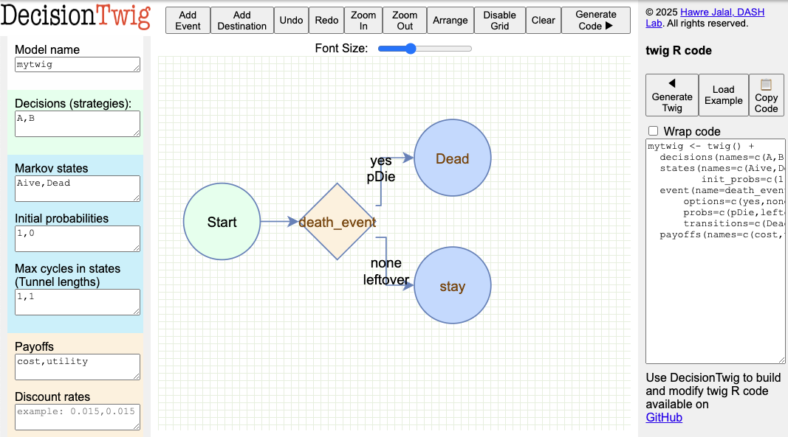
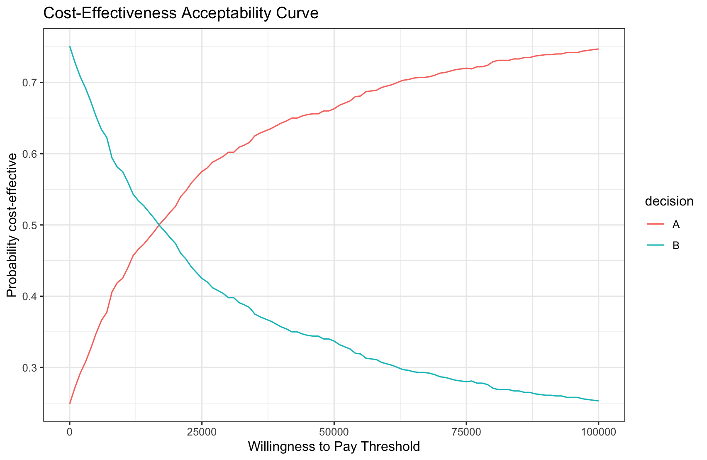

Getting started
twig is an R package for building decision and cost-effectiveness analyses. Below we provide instructions to install the twig R package, a simple Markov model example, and reference two cost-effectivenss tutorials, one on a time-dependent Markov model and the other on a decision tree. For building twig syntax interactively, you can use DecisionTwig which is an online graphical user interface for developing twig syntax.
Installation
The twig package is now available on CRAN and can be installed directly in R using the following command:
install.packages("twig")Alternatively, to install the latest development version from GitHub, use:
library(devtools)
install_github("hjalal/twig")Overview
twig streamlines the process of building models by defining a Grammar of Modeling inspired by the Grammar of Graphics used in the ggplot2 package. twig leverages vectorized operations for efficiency.
A minimal example:
Consider this twig syntax:
library(twig)
mytwig <- twig() +
decisions(names = c(A, B)) + # Decision alternatives
states(names = c(Alive, Dead), # Markov state names
init_probs = c(1, 0)) + # The cohort starts healthy
event(name = death_event, # A death event can
options = c(yes, none), # have two options: "yes" and "none",
probs = c(pDie, leftover), # occur with probabilities: pDie and leftover = 1 - pDie
transitions=c(Dead,stay)) + # can lead to death state otherwise stay in their current state, respectively.
payoffs(names = c(cost, utility)) # Payoff function namesThe concept of Grammar of Modeling is insipred by ggplot’s Grammar of Graphics. The key benefit of adopting this grammar is to minimize repetition in decision and cost-effectiveness analysis modeling to streamline model building, maintenance and debugging. The twig above consists of a decisions layer that includes the names of the alternative strategies or choices, a states layer that describes the Markov states and their initial probabilities, an event layer die_event, and finally a payoffs layer describing how payoffs are accumulated.
The key component of the Grammar of Modeling is to develop a generic sequence of events a twig that applies to the entire population. The flow through these events can be controlled by the probability functions probs which can depend on the decision, state, cycle for age dependency, cycle_in_state for tunnels, and prior events in the twig.
DecisionTwig
In DecisionTwig, this twig will look like this

DecisionTwig allows to interactively build the twig syntax. This can be especially helpful for more complex event sequence structure.
Probability and payoff functions
Next, we define the three functions that we used in the twig: pDie, cost and utility. Note that these functions are all vectorized, meaning that they can take a vector of arguments (e.g., states, decisions, and parameters) and return a vector of probabilities, costs, and utilities. This is a key feature of twig that allows for efficient computation of the model across multiple simulations and avoiding for loops.
These functions can take in decision, state, cycle for age dependency, cycle_in_state for tunnels, and prior event names (e.g., death_event) in this model, in the twig. In addition, you can pass the variables in the params. Global variables can be used inside the functions without passing them as arguments.
# 1. probability of death depends on the state and decision and the relative risk of mortality given treatment A
pDie <- function(state, decision, rrMortA){
rDie <- 0.01*(state=="Alive") * rrMortA^(decision=="A") # rate of death is 20% if alive, 0 otherwise. This rate is multiplied by rrMortA for A, otherwise 1.
rate2prob(rDie) # convert the rate into probability
}
# 2. cost depends on the decision
cost <- function(decision, cA, cB){
cA * (decision=="A") + # if A, 0 otherwise
cB * (decision=="B") # if B, 0 otherwise
}
# 3. utility depends on the state = uAlive if alive, otherwise 0
utility <- function(state, uAlive){
uAlive * (state=="Alive") # only if alive 0 otherwise
}Here we use a concise way to define if-else statements. For example, cA * (decision=="A") is equivalent to ifelse(decision=="A", cA, 0). Both statements are vectorized and can take a vector of decisions and return a vector of costs. However, the former is more concise and easier to read because it avoids nesting multiple ifelse statements.
We also used rrMortA^(decision=="A") to apply the relative risk of mortality if the decision is A, otherwise 1. This is because decision=="A" is treated as 1, and decision!="A" is treated as 0. By combining * and ^ we can concisely express multiple conditional statements.
Parameters
Then, we can create a probabilistic dataframe of our parameter samples:
n_sims <- 1000 # number of simulations
psa_params <- data.frame(
rrMortA = rnorm(n_sims, 0.9, 0.1), # Normal: relative risk of mortality for A vs. B
cA = rlnorm(n_sims, 6, 1), # Log-normal: cost of A
cB = rlnorm(n_sims, 5, 1), # Log-normal: cost of B
uAlive = rbeta(n_sims, 0.8, 0.2)) # Beta: utility of being alive
head(psa_params) # examining the first 6 samples
# rrMortA cA cB uAlive
# 1 1.0168738 1270.91187 34.93591 0.9999919
# 2 0.8952317 1433.50158 351.25445 0.9497743
# 3 0.7524302 90.52039 273.80137 0.9999980
# 4 0.8276866 245.09993 488.33008 0.9805013
# 5 0.8751724 52.21374 219.23235 0.8402547
# 6 0.9473632 396.90634 112.18042 0.9991721twig also accepts a list of parameter scalar values.
Lastly, we run the model for 50 cycles (years) and compute the average expected values (EV) for the costs and utilities of both strategies.
results <- run_twig(twig_obj = mytwig, params = psa_params, n_cycles = 50)
results$mean_ev #average across all simulations
# payoff
# decision cost utility
# A 32379.32 32.11033
# B 12503.32 31.32062Note that your results may be slightly different due to the randomness in params.
Incremental Cost-Effectiveness Ratio (ICER):
We can produce the incremental cost-effectiveness ratio (ICER) by adapting dampack’s calculate_icer function:
# calculate_icers(results$mean_ev)
# decision cost utility inc_cost inc_utility ICER status
# B B 12503.32 31.32062 NA NA NA ND
# A A 32379.32 32.11033 19875.99 0.7897148 25168.57 NDND = Not dominated
Cost-Effectiveness Acceptability Curve (CEAC):
We can also plot the cost-effectiveness acceptability curve (CEAC) using a range of willingness to pay (WTP) thresholds using the plot_ceac function:

This brief tutorial demonstrated the basic functionality of the twig package with a simple Markov model. It shows how to define a basic twig, define the probabilistic input data, run the model, create the ICER table, and produce the CEAC curves. To illustrate more advanced functionality of twig, we provide two vignettes, one on a time-dependent Markov model and the other on a decision tree.
Additional Resources:
- Time-dependent Markov model using the sick-sicker model which illustrates the following features:
- transition probabilities dependent on decisions and states
- transition probabilities dependent on simulation time (i.e., Markov cycle)
- transition probabilities dependent on state residency (i.e., cycle in Markov state) or tunnels
- transition probabilities dependent on prior events in a sequence of events within each cycle
- payoffs dependent on decisions and states
- payoffs dependent on events
- payoff discounting
- parallel computation
- Decision-tree illustrating the cost-effectiveness of herpes simplex encephalopathy
- building a decision tree
- multiple sequential events
- event probabilities dependent on decisions
- event probabilities depending on prior events in a sequence of events
- define final outcomes in a decision tree
- payoff dependent on decisions
- payoff dependency on events and final outcomes
Disclaimer
Please note that both DecisionTwig and twig are still under active development and are provided as-is without any warranty.
Suggested citations:
Jalal, H. (2024). Grammar of Modelling, twig R package. Retrieved from https://github.com/hjalal/twig
Jalal, H. (2024). DecisionTwig. Retrieved from https://www.dashlab.ca/projects/decision_twig/